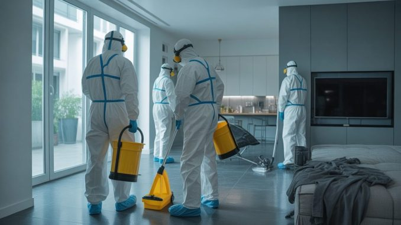

Le nettoyeur de scènes de crime est un professionnel chargé d'intervenir après des événements graves afin de nettoyer, désinfecter et rendre les lieux à nouveau habitables.
Ce métier, peu connu du grand public, demande un mental solide et des compétences techniques très spécifiques.

Voici une vidéo pour mieux comprendre le métier et ses réalités